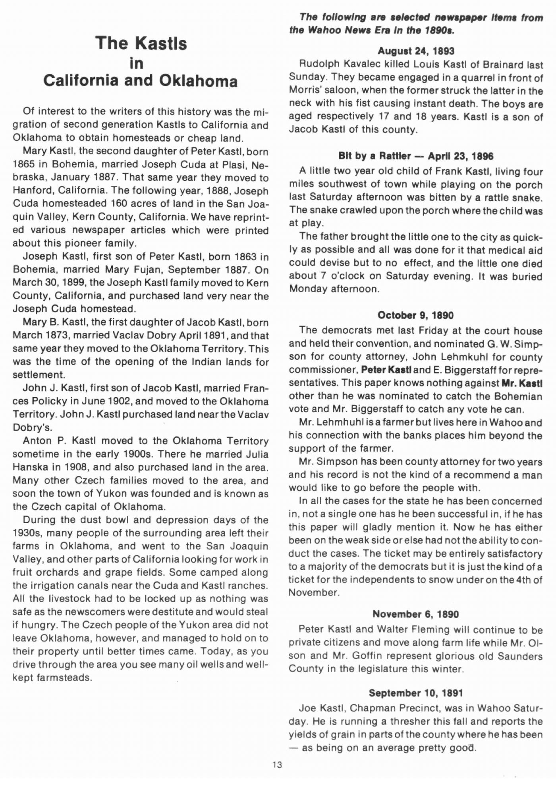

The book · The Kastls: in California and Oklahoma; Newspaper Items in the 1890s
Page 13 The Kastls in California and Oklahoma


Transcription
The Kastls in California and Oklahoma
Of interest to the writers of this history was the migration of second generation Kastls to California and Oklahoma to obtain homesteads or cheap land.
Mary Kastl, the second daughter of Peter Kastl, born 1865 in Bohemia, married Joseph Cuda at Plasi, Nebraska, January 1887. That same year they moved to Hanford, California. The following year, 1888, Joseph Cuda homesteaded 160 acres of land in the San Joaquin Valley, Kern County, California. We have reprinted various newspaper articles which were printed about this pioneer family.
Joseph Kastl, first son of Peter Kastl, born 1863 in Bohemia, married Mary Fujan, September 1887. On March 30, 1899, the Joseph Kastl family moved to Kern County, California, and purchased land very near the Joseph Cuda homestead.
Mary B. Kastl, the first daughter of Jacob Kastl, born March 1873, married Vaclav Dobry April 1891, and that same year they moved to the Oklahoma Territory. This was the time of the opening of the Indian lands for settlement.
John J. Kastl, first son of Jacob Kastl, married Frances Policky in June 1902, and moved to the Oklahoma Territory. John J. Kastl purchased land near the Vaclav Dobry's.
Anton P. Kastl moved to the Oklahoma Territory sometime in the early 1900s. There he married Julia Hanska in 1908, and also purchased land in the area. Many other Czech families moved to the area, and soon the town of Yukon was founded and is known as the Czech capital of Oklahoma.
During the dust bowl and depression days of the 1930s, many people of the surrounding area left their farms in Oklahoma, and went to the San Joaquin Valley, and other parts of California looking for work in fruit orchards and grape fields. Some camped along the irrigation canals near the Cuda and Kastl ranches. All the livestock had to be locked up as nothing was safe as the newscomers were destitute and would steal if hungry. The Czech people of the Yukon area did not leave Oklahoma, however, and managed to hold on to their property until better times came. Today, as you drive through the area you see many oil wells and well-kept farmsteads.
The following are selected newspaper items from the Wahoo News Era in the 1890s.
August 24, 1893
Rudolph Kavalec killed Louis Kastl of Brainard last Sunday. They became engaged in a quarrel in front of Morris' saloon, when the former struck the latter in the neck with his fist causing instant death. The boys are aged respectively 17 and 18 years. Kastl is a son of Jacob Kastl of this county.
Bit by a Rattler — April 23, 1896
A little two year old child of Frank Kastl, living four miles southwest of town while playing on the porch last Saturday afternoon was bitten by a rattle snake. The snake crawled upon the porch where the child was at play.
The father brought the little one to the city as quickly as possible and all was done for it that medical aid could devise but to no effect, and the little one died about 7 o'clock on Saturday evening. It was buried Monday afternoon.
October 9, 1890
The democrats met last Friday at the court house and held their convention, and nominated G. W. Simpson for county attorney, John Lehmkuhl for county commissioner, Peter Kastl and E. Biggerstaff for representatives. This paper knows nothing against Mr. Kastl other than he was nominated to catch the Bohemian vote and Mr. Biggerstaff to catch any vote he can.
Mr. Lehmhuhl is a farmer but lives here in Wahoo and his connection with the banks places him beyond the support of the farmer.
Mr. Simpson has been county attorney for two years and his record is not the kind of a recommend a man would like to go before the people with.
In all the cases for the state he has been concerned in, not a single one has he been successful in, if he has this paper will gladly mention it. Now he has either been on the weak side or else had not the ability to conduct the cases. The ticket may be entirely satisfactory to a majority of the democrats but it is just the kind of a ticket for the independents to snow under on the 4th of November.
November 6, 1890
Peter Kastl and Walter Fleming will continue to be private citizens and move along farm life while Mr. Olson and Mr. Goffin represent glorious old Saunders County in the legislature this winter.
September 10, 1891
Joe Kastl, Chapman Precinct, was in Wahoo Saturday. He is running a thresher this fall and reports the yields of grain in parts of the county where he has been — as being on an average pretty good.
Transcriber’s notes
Start of chapter 'The Kastls in California and Oklahoma' (title set on three lines: 'The Kastls / in / California and Oklahoma'). Right column holds dated newspaper items from the Wahoo News Era; dated item headings are bold in print. 'Peter Kastl' and 'Mr. Kastl' are bold in the October 9, 1890 item. Print inconsistencies kept: 'Lehmkuhl' vs 'Lehmhuhl', 'newscomers'. Newspaper items are not in chronological order in the print.